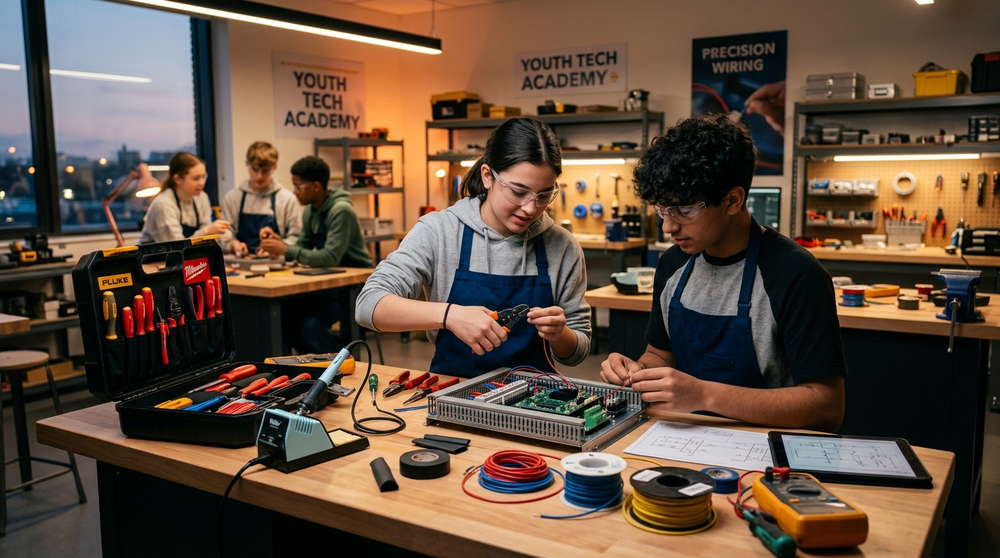

Alumni: Fall 2025 Cohort
🔧 TRADES & ELECTRICAL APPRENTICE
Marcus Jackson, 17
"I came in just wanting something real to do after school. I left knowing how to wire an entire circuit breaker panel and inspect home wiring."
During his 6-week cohort, Marcus inspected electrical outlets for 12 elderly residents in city apartments under Master Electrician Dan Vance. Three weeks after graduation, he was signed to a paid union apprenticeship starting at $22.50/hr.
Marcus on his first live wire test (0:45)
0:45
Now: Union Apprentice Electrician